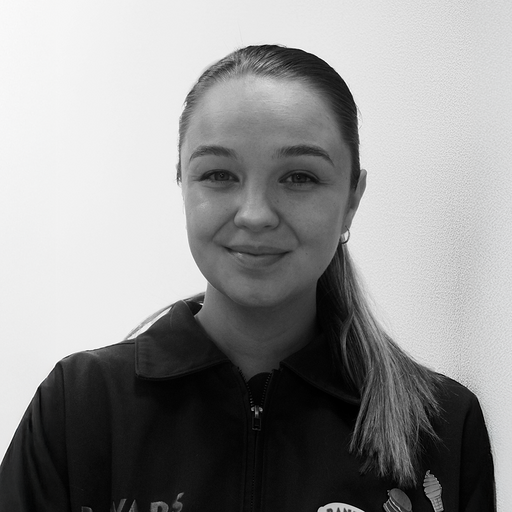

Senior Product Designer with 8 years of experience at Salesforce, designing across B2B and customer-facing products, from SaaS platforms and mobile apps to digital experiences, design systems, and applied AI. Senior Product Designer con 8 años de experiencia en Salesforce, diseñando productos B2B y experiencias para clientes, desde plataformas SaaS hasta aplicaciones móviles y experiencias digitales, además de sistemas de diseño e IA aplicada.
Four case studiesCuatro casos de estudio
SALESFORCE
2022 — 2026
Account Executives face business deals every day where potential clients need reliable data. I designed a tool that generates this data, saving work time and building trust in client relationships. New this year is the Agentforce ROI Calculator.Los ejecutivos de cuentas se enfrentan a diario a negociaciones comerciales en las que los clientes potenciales necesitan datos fiables. He diseñado una herramienta que genera estos datos, ahorrando tiempo de trabajo y fortaleciendo la confianza en las relaciones. Este año presentamos la nueva Calculadora de ROI de Agentforce y Agentic Value
6,630+
value cases generatedvalue cases generados
4,000
AEs & RVPs usersusuarios AEs y RVPs
1,860
exportsexportaciones
SALESFORCE
2020 — 2023
This platform supports over 35,000 salespeople in several tasks across their business process. It provides sales value, demo resources, an AI assistant on the homepage, and tools to engage customers in the most effective and powerful way. The entire platform is aligned thanks to a design system that I co-created and maintain in production, completely independent of Salesforce's own.Esta plataforma da soporte a más de 35 000 vendedores en diversas tareas a lo largo de su proceso de negocio. Proporciona valor añadido para las ventas, recursos para demos, un asistente de IA en la página de inicio y herramientas para interactuar con los clientes de la forma más eficaz y potente. Toda la plataforma está alineada gracias a un sistema de diseño que co-creé y mantengo en producción, completamente independiente del de Salesforce.
35,000+
users globallyusuarios en todo el mundo
3+
regions worldwideregiones
7+
tools in one platformherramientas
1
Design SystemDesign System
SALESFORCE & SLACK
2026
Salesforce sellers were overwhelmed by switching between Salesforce and Slack while they were working on an Account. I led research to integrate Slack natively into Salesforce mapping user pain points, checking technical feasibility, and aligning teams to pitch the final proposal to VP leadership. Two directions were built and A/B tested rather than debated, reviewed with engineering and validated in task-based usability sessions.Los vendedores de Salesforce se veían desbordados por el salto constante entre Salesforce y Slack mientras trabajaban una cuenta. Lideré la investigación para integrar Slack de forma nativa en Salesforce: mapeé los puntos de dolor de los usuarios, comprobé la viabilidad técnica y alineé a los equipos para presentar la propuesta final a la dirección (VPs). Se desarrollaron dos propuestas y se sometieron a pruebas A/B, en lugar de debatirlas; además, se revisaron con el equipo de ingeniería y se validaron en sesiones de usabilidad basadas en tareas.
34
sellers interviewedvendedores entrevistados
27
surveys receivedencuestas recibidas
4
teams involvedequipos involucrados
9+
Years in design evolving from visual design to end-to-end product strategyAños en diseño, del oficio visual a la estrategia de producto end-to-end
8 yrs
At Salesforce leading strategy & end-to-end UX for internal seller platformsEn Salesforce liderando estrategia y UX end-to-end de plataformas internas de venta
$110M+
In closed enterprise deals supported through UX & presales solutionsEn operaciones enterprise cerradas apoyadas con UX estratégica y soluciones de preventa
66%
Time reduction in UX research synthesis achieved with AI-assisted workflowsDe reducción de tiempo en la síntesis de research con flujos asistidos por IA
AboutSobre mí
I'm a Senior Product Designer based in Madrid with 8 years of experience at Salesforce designing complex B2B products.Soy Senior Product Designer en Madrid con 8 años de experiencia en Salesforce diseñando productos B2B complejos.
I trained as a fine artist in Madrid and Bordeaux, started out in visual design and packaging, and joined Salesforce in Dublin in 2018 as Experience Designer supporting Solution Engineering and Account Executives across EMEA. Since then I've spent 8 years creating end-to-end product designs (research, wireframing, high-fidelity design, usability testing, and implementation QA) in collaboration with Product Owners, engineering, Program Managers and pre-sales stakeholders.Me formé como artista plástico en Madrid y Burdeos, comencé mi carrera en diseño visual y packaging, y me incorporé a Salesforce en Dublín en 2018 como Diseñador de Experiencia, dando soporte a Ingeniería de Soluciones y Ejecutivos de Cuentas en EMEA. Desde entonces, he dedicado 8 años a la creación de diseños de producto integrales (investigación, wireframing, diseño de alta fidelidad, pruebas de usabilidad y control de calidad de la implementación) en colaboración con Product Owners, ingeniería, Program Managers y el equipo de preventa.
I integrate generative AI to accelerate UX research and design conversational assistants. I am a native Spanish speaker with a C1 level in English and a B2 level in French, having lived in several English and French-speaking countries.Integro IA generativa para acelerar la investigación de UX y el diseño de asistentes conversacionales. Soy hispanohablante nativo, con un nivel C1 de inglés y un nivel B2 de francés, y he vivido en varios países de habla inglesa y francesa.
Kind wordsLo que dicen de mí
“Laura is incredibly easy to work with — a clear communicator and a careful listener, very receptive to developer and stakeholder feedback. Fantastic attention to detail: she stays focused on the bigger picture but goes into the small details when necessary.
She always produces two or three different scenarios, which makes working with stakeholders incredibly easy — they can see what’s in front of them and make informed decisions. She gained in-depth knowledge of a very difficult existing project (BVD) and converted it into a simple, straightforward design, removing complexity at every step.
Laura always puts an emphasis on making her Figma designs easily consumable for developers — the dev team appreciate this very much. She produces high-quality work at a fast pace, identifies the most important work and prioritises well, and can deal with ambiguity and understands how to overcome it. Always a pleasure to work with."
Colm O’Shea
Software Engineering LMTS @ Salesforce
“Laura was my mentor when I first started at Salesforce, and she’s remained one ever since. Even now that we no longer work together, I still find myself going to her when I run into a tough problem. She was exactly the person I needed at the beginning of my career and I am so thankful.
What makes her stand out isn’t just her talent — though she’s an incredibly skilled designer with range across so many areas of the craft — it’s how much she cares. She cares deeply about the quality of the work, and just as much about the people she works with. She’s generous with her time and her knowledge in a way that’s rare.
Laura is so smart and endlessly talented. I’d work with her again on every project, every day, given the chance. Any team would be lucky to have her."

Shannon Foy
UX Designer @ Google
“I had the pleasure of working with Laura, and her communication skills, attention to detail and ability to handle complexity have always stood out. She has led UX/UI design work that earned high praise from stakeholders, and navigated multiple team restructurings with real resilience, never letting that affect the quality of her work.
She brings a warm, collaborative energy to everything she does — coordinating complex, cross-functional research projects while still being someone people genuinely enjoy working with. Her dedication to continuous learning, from UX strategy through to data analytics, shows how invested she is in doing right by the people who use what she builds.
I highly recommend Laura for any opportunity that comes her way. She is a true professional and a wonderful person to have on any team."
Mario Picariello
Principal Experience Designer, AI Centre @ Salesforce